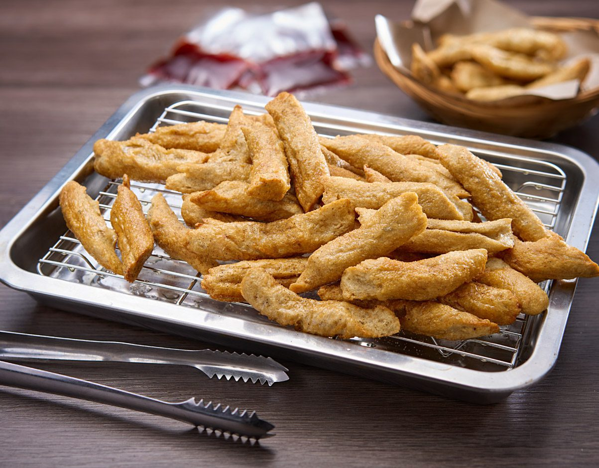

Ingredients
- 500g fish fillet (mackerel or sardines)
- 300g tapioca flour
- 1 teaspoon salt
- 1/2 teaspoon sugar
- Oil for frying
- Sambal or chili sauce for dipping
Instructions
- Blend the fish fillet until it forms a paste.
- Mix the paste with tapioca flour, salt, and sugar to form a dough.
- Roll the dough into long, thin cylinders.
- Boil the cylinders in hot water until they float, then let cool.
- Slice the boiled rolls into smaller pieces and deep-fry until golden. Serve with sambal or chili sauce.